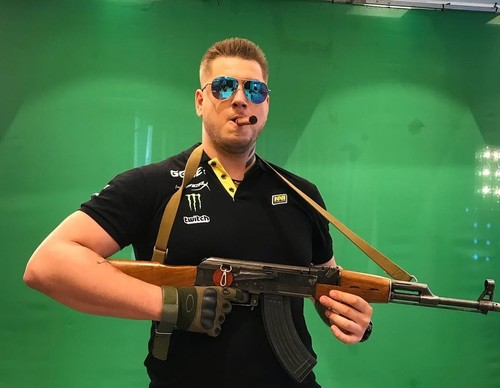

.
 Этот сайт про команду "Natus Vincere", с историей 4-х её игроков.
Этот сайт про команду "Natus Vincere", с историей 4-х её игроков.

Даниил "Zeus" Тесленко
Профессиональный игрок в CS:GO. Чемпион турнира Major (в составе Gambit Esports) в 2017 году.
Превосходные лидерские качества и сильная игровая мораль - отличительные черты Даниила. Zeus за свою долгую карьеру выступал за многие коллективы, включая pro100, Virtus.pro, Arbalet.UA и Natus Vincere, в составе которых и перешел в новую дисциплину CS:GO. В последние годы стал медийным лицом - Zeus записываем множество обучающих видео, а также ролики с ЛАН-турниров. Открыл свою "киберспортивную школу". Являлся капитаном команды Natus Vincere. Многократный чемпион мира в составе "Рождённых побеждать".
А августе 2016 года после череды неудачных выступлений покинул команду и стал выступать за Gambit Gaming. Написал свою книгу "Вопреки - путь к победе", книга разошлась не малым тиражом и считается уважаемой в киберспортивном мире. На момент выхода книги вернулся в состав "NAVI". Но после череды неприятных поражений в 2019г. ушёл из киберспорта. Даниил Zeus Тесленко рассказал, есть ли у него желание продолжить карьеру игрока в CS:GO. В интервью Brewmeister Esports он также объяснил, почему ушел из Natus Vincere: «В плане именно игрока [возвращение в киберспорт] еще под большим вопросом. В плане вообще в целом, то я из киберспорта как бы и не уходил. У меня здесь много проектов, и мы их потихонечку развиваем. На самом деле, глобальные проекты планируем запустить именно в 2020 году."